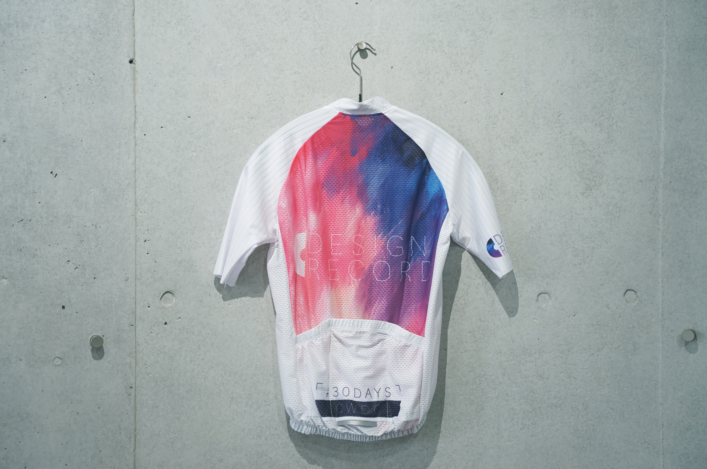
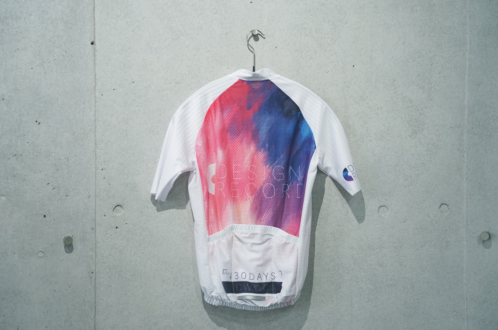

¥11,000+TAX
深いブルーからピンクへとフェードしていくグラデーションを使用し 夕日が沈み夜が始まろうとする空をイメージしました 仕事や学校終わりの夕方ライドで着用してほしい１着です。
胴体部分には通気性の良いメッシュ素材を使用しつつ袖には エアロスリーブを使用し速さと快適さを両立させました。


¥11,000+TAX
星空をイメージした夜を走るサイクリストの為のデザインです。 ただ星空を描くだけでなく、色を反転させ白を基調とすること で夜間走行時でも周囲へ存在をアピールしやすい配色です。
胴体には通気性の良いメッシュ生地を使用し、袖にはタイルの ようなパターンを持ったエアロスリーブを使用しています。
¥13,000+TAX
「シンプルかつブランドの個性が出せる正しいシンプルさ」をコンセプトに制作しており、不要なものをなくすという意味からNoiceCancelingの名前を付けました。２種類の色を発売しております。
裏起毛を使用しており、気温の低い冬のライドに最適です。
¥13,000+TAX
「シンプルかつブランドの個性が出せる正しいシンプルさ」をコンセプトに制作しており、不要なものをなくすという意味からNoiceCancelingの名前を付けました。２種類の色を発売しております。
暴風素材を使用しており微妙な温度変化にも対応できる素材です。
PRODUCTS.